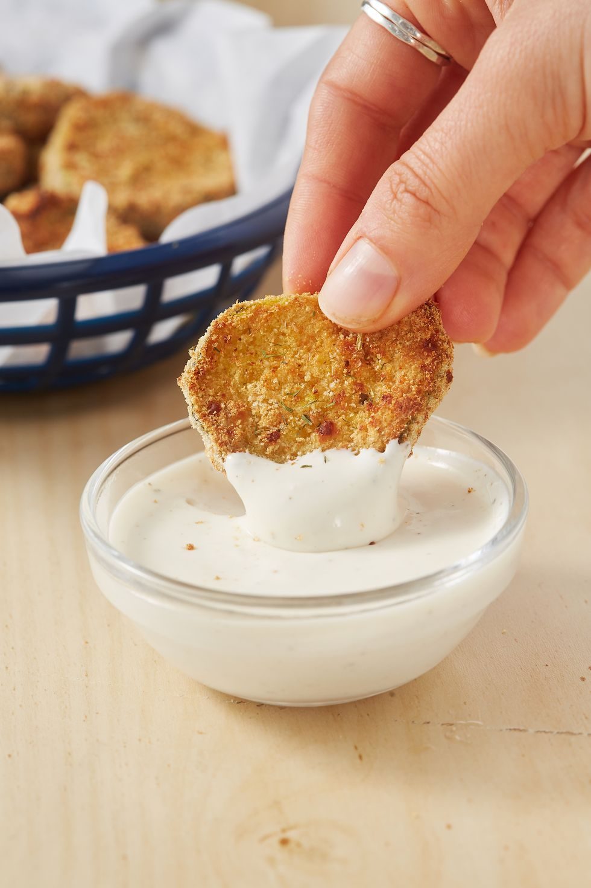

Fried Pickles

Air fryer fried pickles are crispy and crunchy with lots of great dill pickle flavor and they can be made right at home!
Serve it as an appetizer as you root on your favorite team on Sunday night football, or a side dish paired next to a juicy hamburger. No matter how you serve up these gems, they are dynamite in flavor.
Ingredients
- 2 c. dill pickle slices
- 1 egg, whisked with 1 tbsp. water
- 1/2 c. bread crumbs
- 1/4 c. freshly grated Parmesan
- 1 tsp. dried oregano
- 1 tsp. garlic powder
- Ranch, for dipping
Steps
- Using paper towels, pat pickle chips dry. In a medium bowl, stir together bread crumbs, Parmesan, oregano, and garlic powder.
- Dredge pickle chips first in egg and then in the bread crumb mixture. Working in batches, place in a single layer in air fryer basket. Cook at 400° for 10 minutes.
- Serve warm with ranch.